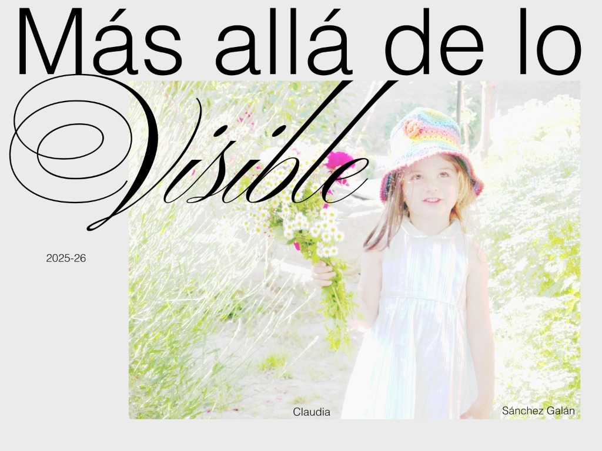
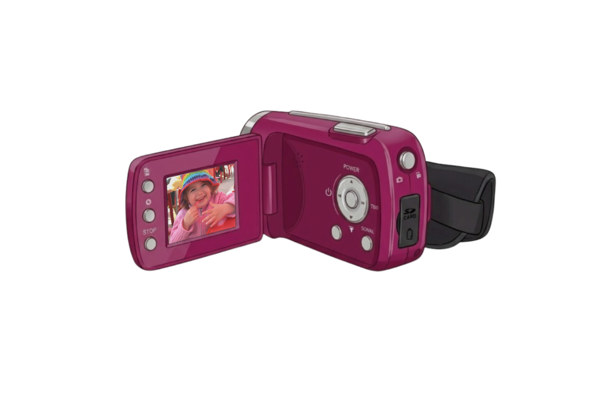

Pulsa sobre las estrellas para descubrir más
Documental 01

Experiencia 02
Tras experimentar la instalación, te invitamos a compartir tus reflexiones. Tu perspectiva se convierte en parte de la obra.
Haz clic en la cámara para compartir tu experiencia

Proyecto
Más allá de lo visible nace de tres preguntas, las cuales me llevan atormentando los últimos 6 años de mi vida, y lo harán supongo, hasta que me funda con lo tangible y deje de intentar resolverlas.
Es una obra documental sobre la identidad que además ocupa un espacio concreto ya que pretende ser habitado. A través de la imagen no se pretende resolver; la imagen es el medio, un medio de activación para que, desde hoy, compartas estas preguntas conmigo.
¿De dónde vengo? ¿Quién soy? ¿Para qué estoy hecha?
Es un proyecto utópico que nunca tendrá un final. Es un bucle eterno de perseguir preguntas. Hubo un día en que dije que era el proyecto de mi vida y un profe se rió; es anecdótico, pero es la verdad. Es el proyecto de mi vida, el proyecto de mi vida será, es y ha sido siempre intentar resolver preguntas sin respuestas y escribir sobre ellas. Supongo que el proyecto de mi vida es ser poeta y seguir viendo, siempre, más allá de lo visible.
Instalación
La instalación física propone un espacio inmersivo donde convergen la poesía y la filosofía con la imagen. Un escenario íntimo que reproduce la atmósfera personal, poblado de pequeños resquicios de recuerdos y fragmentos de memoria.
Cada elemento de la sala funciona como una capa narrativa.
El visitante es invitado a detenerse, a observar desde cerca, a habitar el tiempo de la obra.
Este apartado será actualizado con entradas cada vez que la obra se instale.
09 de Junio 2026
Primera instalación del documental Más allá de lo vivible, en la Facultad de Bellas artes de la UPV.
La sensación de la primera exposición de Más allá de lo visible podría resumirse en 3 conceptos: vulnerabilidad, comunidad y gratitud. Tras estos últimos meses con la producción fue súper gratificante poder dar el paso y montar la instalación de la obra. Desde el primer momento me emocionó mucho ver cómo por fin, esas cuestiones, ocupaban un lugar fuera de mi cabeza.
A cerca de la interacción con el público y en la faceta más evolutiva de la obra, se generó un archivo sobre todo gráfico a nivel pictórico. Los participantes en estas sesiones canalizaron sus emociones y respuestas a través de pictogramas o dibujos. Por otro lado, en cuanto al vídeo de archivo que se recopiló en la estancia habilitada para que se compartieran cuestiones se generó un silencio inmenso ante el desconocimiento. Me sorprendió cómo al final el silencio se mantuvo en todo momento una vez acabado ya el vídeo. Se generó un ambiente de respeto y sobre todo de sororidad ante el proyecto.
Galería
Fotos rodaje plató 30.01
Fotos instalación
Fotos de archivo
Sin imágenes aún — próximamente
Sobre mí 06
Claudia Sánchez Galán trabaja entre lo audiovisual y lo instalativo. Su práctica se centra en la memoria, la infancia y los límites de la representación desde una perspectiva editorial y contemporánea.
Este proyecto es su Trabajo de Fin de Grado (TFG), un documental en cinco capítulos que despliega la identidad a través de la imagen, el sonido y el espacio.
Disciplina
Documental · Instalación · Experiencia digital
Medio
Vídeo · Fotografía · Espacio 3D
Año
2026